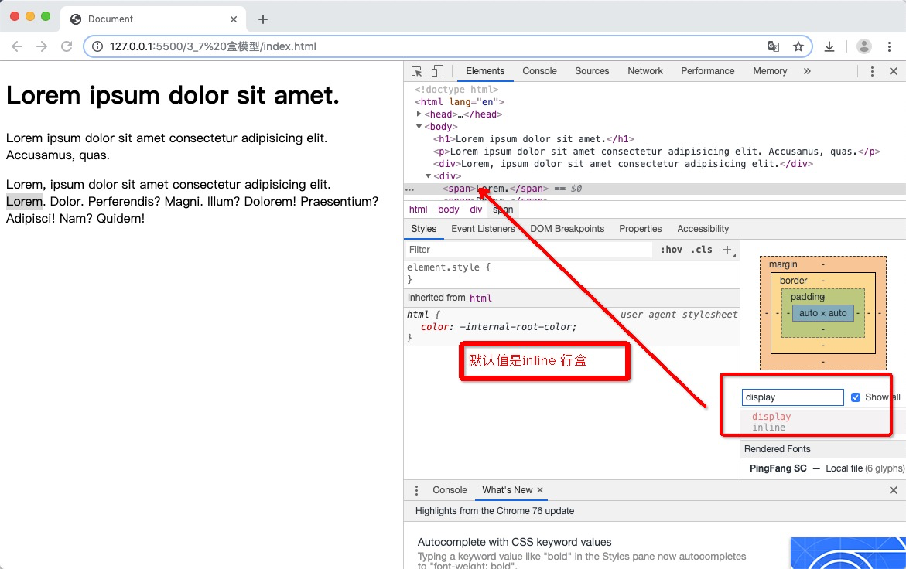
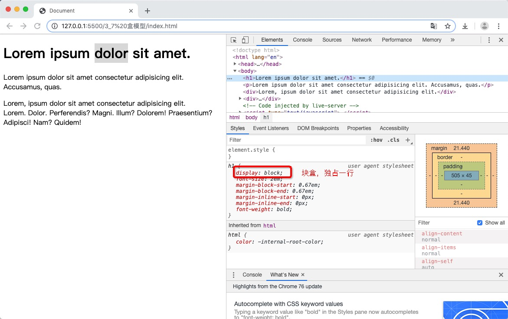
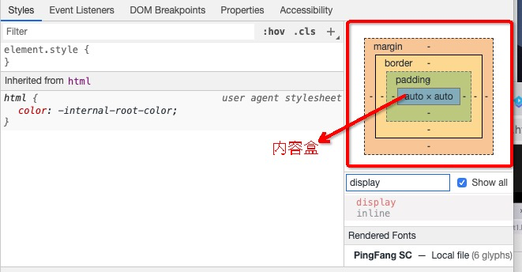

title: "3-7 盒模型"
catalog: true
date: 2019-08-25
subtitle: "HTML和CSS零基础权威入门"
header-img: "Demo.png"
tags:
每个元素都会在页面上生成一个矩形区域（盒子）
之前html的叫法，叫行元素，块元素。
现在html5的正确叫法，叫行盒，块盒。
display = inline 的元素
特点：不换行

display = block 的元素
特点：独占一行

常见的块盒：容易元素：h1~h6, p, div
常见的行盒：span, a, img, video, audio
无论是行盒，还是块盒 都由以下几个部分组成，从内到外分别是：

内容部分通常叫做整个盒子的内容盒 content-box
width, height 设置内容盒的 宽与高
盒子边框到盒子内容的距离
padding-left, padding-top, padding-right, padding-bottom
简写属性：padding: 上 右 下 左
填充区 + 内容区： 填充区 padding-box
border-style, border-color, border-width
边框 + 填充区 + 内容区： 边框区 border-box
距离其它盒子的距离
margin-left, margin-top, margin-right, margin-bottom
box-sizing 属性
内容 通常叫做整个盒子的内容盒
填充区 + 内容去： 叫做整个盒子的填充盒
边框 + 填充区 + 内容区：叫做整个盒子的边框盒